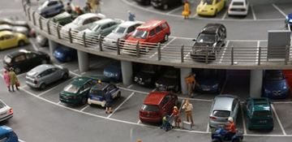
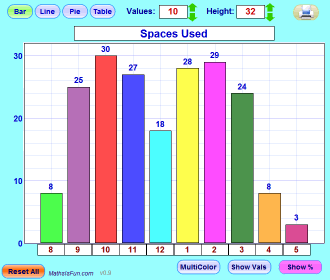

Activity: Parking Spaces
How many parking spaces are being used?

Find an area where people park their cars ... along the road or in a parking lot.
Make sure you can count the spaces without getting run over! Find a safe place such as on the grass or in a building that looks out over the area.
Step 1: Count the total number of parking spaces (whether used or not). This will make it easier later:
- when there are only a few cars you can count the cars,
- but when there are a lot of cars it is easier to count the empty spaces, and subtract that from the total spaces to find how many are used.
You might also like to make a sketchof the area.
Step 2: Count the used (or empty) spaces every hour. Use this chart:
|
Spaces Used |
Spaces Empty |
Total |
|
| 8:00 | |||
| 9:00 | |||
| 10:00 | |||
| 11:00 | |||
| Midday | |||
| 1:00 | |||
| 2:00 | |||
| 3:00 | |||
| 4:00 | |||
| 5:00 |
The total will always be the same (you worked it out in step 1). It is up to you to count Spaces Used or Spaces Empty, and then calculate the other by subtracting from the Total.
If you work on this with a friend you can take it in turns to do the counting.
If you want to, you could even count the spaces every 10 minutes!
Step 3: Graph your results. You can use Data Graphs to help you, or plot it by hand.

In this example there were a total of 32 spaces.
You can see:
- most of them were used during the day.
- at Lunch about half the spaces were free,
- and by 4:00 in the afternoon it was mostly empty.
Step 4: What does your data show?
- Are there enough parking spaces?
- When is it busiest
- When is it quietest?
- Did you notice anything unusual?
Step 5: The future ...
... if the area got busier (maybe some new houses or shops), would there still be enough parking spaces?